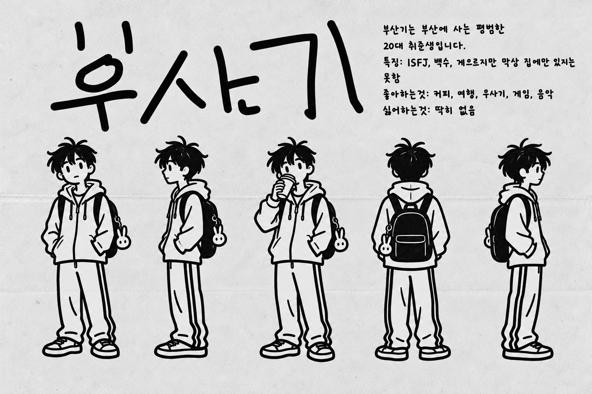

PERSONAL ARCHIVE / BUSAN, KR일상의 조각을 모으는 중 ↙
가방 하나 메고,
오늘도 발견하러 갑니다. THAT'S ME! ↖
THAT'S ME! ↖
오늘도 발견하러 갑니다.
THAT'S ME! ↖관찰하고 / 만들고 / 연결하고SCROLL TO EXPLORE ↓
SELECTED ARCHIVE
차곡차곡, 나의 기록들
생각의 시작부터 결과물까지.
세 가지 챕터에 담았습니다.

A LITTLE ABOUT ME
평범한 하루에도,
이야기는 있으니까.
커피와 여행, 게임과 음악을 좋아합니다.
집이 좋지만, 막상 집에만 있지는 못하는 사람.
익숙한 곳에서도 새로운 장면을 발견하고 기록합니다.
다음 페이지에서, 더 많은 이야기를 만나요. ↗
만든 콘텐츠 보러 가기 ↗